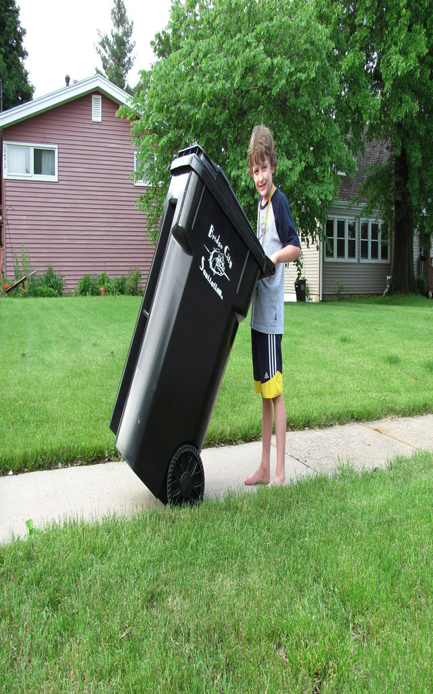

<ion-header class="bgtranslucent">

  <ion-navbar>
    <ion-title>WASTEK</ion-title>
  </ion-navbar>

</ion-header>


<ion-content>
  

  <ion-footer>
    <button ion-button full color="dark" (click)="openLogin()">
      LOGIN
    </button>

    <button ion-button full color="viol" (click)="openRegister()">
      REGISTER
    </button>
  </ion-footer>

</ion-content>
